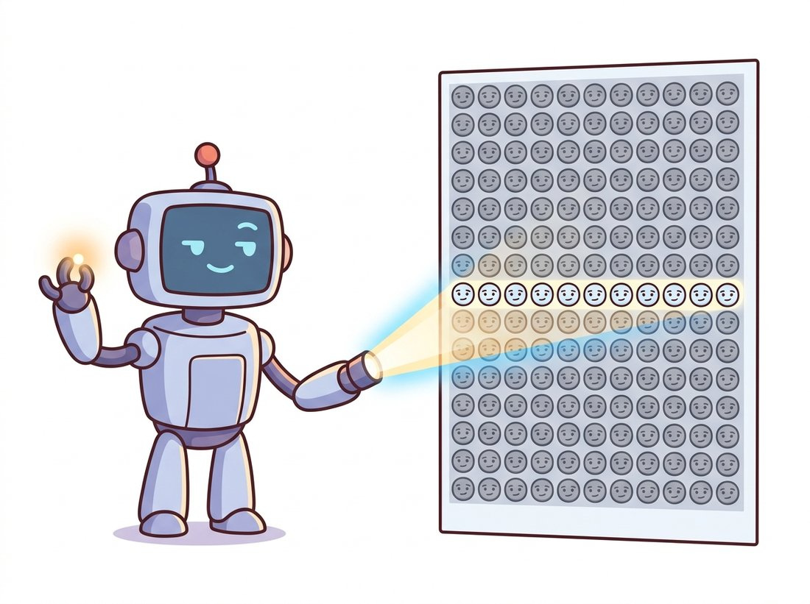

"I cannot tell you exactly where your point went in the other photograph. But I can tell you the one line it is hiding on, which narrows things down from a million suspects to about a thousand. You're welcome."
A Helpfully Restrictive Epipolar Line
Two cameras looking at the same scene are not free to disagree arbitrarily: a point seen in one image must appear, in the other image, somewhere on a single specific line, and this one constraint is the foundation of all multi-view geometry. This section builds that constraint from nothing but the pinhole model of Chapter 12. You will learn the vocabulary (baseline, epipole, epipolar plane, epipolar line), see why the constraint collapses correspondence search from two dimensions to one, and compute real epipolar lines on real image pairs with OpenCV. The algebra that encodes the constraint as a matrix is deliberately postponed to Section 13.2; geometry first, equations second.
Chapter 12 left us with a precise account of what one camera does: it projects each 3D point along a ray through the optical center onto the image plane, and the intrinsic matrix $K$ tells us exactly which pixel that ray hits. It also left us with a loss we could not repair. Every point on a given ray, whether one meter away or one kilometer, lands on the same pixel. Depth is not hidden in a single image; it is absent. This section begins the repair, and the tool is almost embarrassingly simple: take a second photograph from somewhere else. (The illustration below makes the bargain vivid: one eye flattens the world, two eyes hand the third dimension back.)
1. What a Second View Knows Beginner
Consider a point $\mathbf{x}_L$ in the left image. From the left camera's perspective, the 3D point $\mathbf{X}$ that produced it could be anywhere along the viewing ray from the left optical center $\mathbf{C}_L$ through $\mathbf{x}_L$. One image cannot say more. Now ask what the right camera sees. It observes that same ray from the side, and a ray, viewed from anywhere not on it, projects to a line. So whatever depth $\mathbf{X}$ actually has, its image in the right view must fall on the projection of the left ray: a single line in the right image, called the epipolar line.
This deserves a moment of appreciation. We have not measured anything yet, not matched a single descriptor, and already the geometry has handed us an enormous gift: the correspondence problem of Chapter 10, which searched a whole 2D image for each match, has become a 1D search along a known line. For a $1000 \times 1000$ image, that is a thousandfold reduction in candidates before any pixel is compared, as the illustration below dramatizes.

Epipolar geometry never tells you where on the line the match is; finding that still requires comparing pixels, which is the whole business of Section 13.4. What it provides is a hard geometric filter: any candidate match off the line is wrong, full stop, regardless of how similar the pixels look. In practice this filter does double duty. It shrinks the search space for honest matchers, and it exposes dishonest matches: a descriptor pair that violates the epipolar constraint by twenty pixels is an outlier no matter how well the descriptors agree. RANSAC in Chapter 10 used a homography as its geometric verifier; from this chapter onward, epipolar geometry is the more general verifier of choice.
The constraint rejects matches; it does not confirm them. Students often invert the logic of the Key Insight above and conclude that any pair sitting on its epipolar line is a genuine correspondence. It is not: the line is a one-dimensional locus, and a wrong match that happens to land on it (rampant with repeated structure, where every brick or fence post projects near every other one's line) passes the test while being a different physical point entirely. This is exactly the failure the warehouse robot below hits, and why the epipolar gate reduces false matches rather than eliminating them. The line says "this pair is not geometrically impossible"; only photometric agreement plus a wide enough baseline says "this pair is the same point."
2. The Epipolar Vocabulary Intermediate
The full structure becomes visible when you draw both cameras and one 3D point, as in Figure 13.1.1. Three points define the picture: the two optical centers $\mathbf{C}_L$, $\mathbf{C}_R$, and the scene point $\mathbf{X}$. Together they span a plane, the epipolar plane. Everything else is intersections of that plane with the two image planes.
Working through Figure 13.1.1 gives the complete glossary. The baseline is the segment joining the two optical centers; its length, also called the baseline, will set the depth precision of stereo in Section 13.5. The epipoles $\mathbf{e}_L$ and $\mathbf{e}_R$ are where the baseline pierces each image plane: the epipole in the left image is literally the photograph of the right camera's center, and vice versa. The epipolar plane intersects each image plane in an epipolar line, and since both $\mathbf{x}_L$ and $\mathbf{x}_R$ are images of a point on that plane, each must lie on its line.
Now let $\mathbf{X}$ slide to different depths along the left viewing ray. The epipolar plane does not change (the ray lies inside it), so the right epipolar line does not change either; the match $\mathbf{x}_R$ just slides along it. But pick a different pixel $\mathbf{x}_L$, and the plane rotates about the baseline like a page turning on its spine, sweeping out a new pair of epipolar lines. Two consequences follow immediately, and both are worth committing to memory:
- Every epipolar line passes through the epipole. The baseline lies in every epipolar plane, so its piercing points, the epipoles, lie on every epipolar line. The family of epipolar lines is a pencil of lines radiating from the epipole.
- Epipolar lines come in mated pairs. One plane cuts both images, so each epipolar line in the left image has exactly one partner in the right image, and matches can only happen between partners.
The epipole is the image of the other camera's optical center, which means it is a perfectly real image point even when the other camera is far outside the picture frame. In most stereo pairs the epipoles sit comfortably off-image (often kilometers off, in pixel units). Students who first compute an epipole at pixel coordinates $(48000, -3100)$ tend to assume a bug. Usually it is just geometry being literal: that is where the other camera would appear if the sensor were a few meters wide.
3. From Geometry to a Usable Test Intermediate
The constraint has a compact verbal form: corresponding points lie on corresponding epipolar lines. To make it computational we need a function that, given a point in one image, produces the epipolar line in the other. Section 13.2 will show that this function is linear in homogeneous coordinates: a single $3 \times 3$ matrix $F$, the fundamental matrix, maps a left point to a right line, $\boldsymbol{\ell}_R = F \mathbf{x}_L$, and the constraint becomes the elegant scalar equation $\mathbf{x}_R^\top F \mathbf{x}_L = 0$. For this section we treat $F$ as a black box that OpenCV can estimate from matched keypoints, and concentrate on what the resulting lines look like and how to use them.
A line in homogeneous coordinates is a 3-vector $\boldsymbol{\ell} = (a, b, c)^\top$ representing $ax + by + c = 0$, a representation introduced with projective transforms in Chapter 5. The perpendicular distance from a pixel $(x, y)$ to that line is
$$ d\big((x,y),\, \boldsymbol{\ell}\big) \;=\; \frac{|ax + by + c|}{\sqrt{a^2 + b^2}}, $$
and this distance is the workhorse test of two-view geometry: a candidate correspondence is epipolar-consistent if each point sits within a pixel or two of its partner's epipolar line. The code below runs the full pipeline on a real pair: detect and match SIFT keypoints exactly as in Chapter 10, estimate $F$ robustly, then compute and draw the epipolar lines for a handful of inlier matches.
# Full epipolar pipeline on one real stereo pair: SIFT-match the views,
# estimate the fundamental matrix F robustly, then turn matched points
# into the epipolar lines F predicts and draw one to inspect the fit.
import cv2
import numpy as np
imgL = cv2.imread("left.jpg", cv2.IMREAD_GRAYSCALE)
imgR = cv2.imread("right.jpg", cv2.IMREAD_GRAYSCALE)
# 1. Correspondences, exactly as in Chapter 10: SIFT + ratio test
sift = cv2.SIFT_create()
kpL, desL = sift.detectAndCompute(imgL, None)
kpR, desR = sift.detectAndCompute(imgR, None)
knn = cv2.BFMatcher(cv2.NORM_L2).knnMatch(desL, desR, k=2)
good = [m for m, n in knn if m.distance < 0.75 * n.distance]
ptsL = np.float32([kpL[m.queryIdx].pt for m in good])
ptsR = np.float32([kpR[m.trainIdx].pt for m in good])
# 2. Robust fundamental matrix (MAGSAC++ flavor of RANSAC)
F, inlier_mask = cv2.findFundamentalMat(ptsL, ptsR,
cv2.USAC_MAGSAC, 1.0, 0.999)
inl = inlier_mask.ravel().astype(bool)
print(f"{inl.sum()} / {len(good)} matches are epipolar-consistent")
# 487 / 612 matches are epipolar-consistent
# 3. Epipolar lines in the LEFT image for right-image inlier points
# (whichImage=2 means the points live in image 2, the right one)
linesL = cv2.computeCorrespondEpilines(ptsR[inl], 2, F).reshape(-1, 3)
a, b, c = linesL[0]
x0, x1 = 0, imgL.shape[1]
y0, y1 = int(-c / b), int(-(c + a * x1) / b) # line endpoints at image borders
vis = cv2.cvtColor(imgL, cv2.COLOR_GRAY2BGR)
cv2.line(vis, (x0, y0), (x1, y1), (0, 0, 255), 1)
cv2.circle(vis, tuple(ptsL[inl][0].astype(int)), 5, (0, 255, 0), -1)
cv2.imwrite("epiline_left.png", vis)cv2.findFundamentalMat fit with the USAC_MAGSAC robust estimator, then cv2.computeCorrespondEpilines turns each right-image point into the $(a, b, c)$ coefficients of its left-image epipolar line, drawn here in red through the matching green keypoint. The printed inlier count (487 of 612) is the epipolar-consistency filter at work, rejecting matches that violate $\mathbf{x}_R^\top F \mathbf{x}_L = 0$.The code prints how many matches survive the epipolar gate; make that number breathe. Re-run cv2.findFundamentalMat with the threshold argument (the 1.0, in pixels) set to 0.3, then 1.0, then 3.0, then 10.0, and watch the printed inlier count climb as you loosen it. The lesson lands in under a minute: a tight threshold keeps only matches sitting almost exactly on their epipolar line (high precision, but it discards good matches blurred by detector noise), while a loose one waves through outliers that merely land near the line. Then draw ten epipolar lines at a tight setting and again at a loose one: the tight pencil converges crisply on a common epipole, the loose pencil frays as wrong matches drag the fit. There is no universal right value; you are trading precision against recall, and seeing the count respond is how you build a feel for where to set it on your own data.
Run this on any pair of photos of a static scene and inspect the output image: the red line should pass through the green point, typically within a pixel. Repeating the drawing for ten matches produces ten lines that all radiate from a common (often off-image) point, the epipole, exactly as the pencil-of-lines picture predicts. When the lines do not converge, or the points sit far off their lines, something upstream is wrong: bad matches that RANSAC failed to reject, a moving object dominating the correspondences, or a degenerate configuration of the kind Section 13.2 and Section 13.3 dissect.
Everything geometric in this section reduces to two OpenCV calls: cv2.findFundamentalMat(ptsL, ptsR, cv2.USAC_MAGSAC, 1.0, 0.999) estimates the epipolar geometry from matches, and cv2.computeCorrespondEpilines(pts, whichImage, F) maps points to partner lines. Building the same from scratch (homogeneous line algebra, the eight-point solver of Section 13.2, a RANSAC loop with epipolar-distance scoring) runs to roughly 150 lines; the library reduces it about 75-to-1 and internally handles point normalization, the rank-2 constraint, MAGSAC++'s threshold-free inlier weighting, and degenerate-sample rejection. You will still write the from-scratch version in the next section, because debugging real systems requires knowing what these two calls assume.
4. Special Configurations Worth Recognizing Intermediate
Two camera arrangements produce epipolar geometry so distinctive that you should recognize them on sight, because entire system designs are built around each.
Side-by-side cameras (the stereo configuration). When the two cameras are related by a pure horizontal translation with parallel optical axes, the baseline is parallel to both image planes and never pierces them: the epipoles move to infinity. The pencil of epipolar lines, all forced through a point at horizontal infinity, becomes a family of parallel horizontal lines, and corresponding points share the same row. This is the dream configuration for dense matching, and Section 13.4 exists because of it: rectification is nothing but warping an arbitrary pair until its epipolar geometry looks like this.
Forward motion. When the camera translates along its own optical axis (a car driving forward, a drone descending), the baseline pierces both image planes at the principal point: both epipoles sit in the middle of the image, and epipolar lines radiate outward from the center like spokes. Matches slide outward along the spokes as the camera advances. This radial pattern is the focus of expansion that Chapter 15 revisits with optical flow, and it is the hardest case for stereo matching: near the epipole, the epipolar "line" segment available for matching shrinks to nearly nothing, and depth becomes unobservable along the motion axis.
Who: A robotics team at a logistics company, building visual localization for autonomous tugs in a 40,000-square-meter warehouse.
Situation: The tugs localize by matching ORB features between the live camera and a map of reference images. The warehouse is the adversarial case for matching: hundreds of visually identical racking uprights, repeated every 2.7 meters.
Problem: Descriptor matching alone produced 30 to 60 percent false correspondences (an upright matched to a different, identical upright), and pose estimates would jump sideways by exactly one rack period several times per shift. Tightening the descriptor ratio test just discarded almost all matches without fixing the period jumps.
Decision: Instead of trusting descriptors harder, the team added an epipolar gate. Wheel odometry gave a rough relative pose between the live frame and the reference frame; from it they computed the expected epipolar geometry and discarded any match whose point sat more than 3 pixels from its predicted epipolar line, before running the final pose solver.
Result: False-match rate after gating fell below 4 percent, rack-period localization jumps disappeared from the logs, and the matcher could actually loosen its ratio threshold, recovering matches in low-texture aisles. CPU cost of the gate: a dot product and a division per match.
Lesson: Appearance says "these two patches look alike"; epipolar geometry says "these two pixels could be the same physical point." In repetitive environments, the second statement is the one you can trust, and it costs almost nothing to check.
5. Where the Constraint Comes From, and Where It Breaks Advanced
It is worth being precise about the assumptions, because every failure of two-view geometry in practice traces back to one of them. The epipolar constraint requires exactly three things: a static scene point (so that both cameras photograph the same $\mathbf{X}$), two distinct optical centers (so that a plane, not a line, is spanned), and cameras that behave like pinholes (so that projection is along straight rays, the assumption Chapter 12 spent a whole section repairing with distortion correction; always undistort before doing epipolar geometry).
Each assumption fails in an instructive way. A moving object violates the static-scene premise: its matches satisfy a different epipolar geometry (one induced by the object's motion composed with the camera's), which is why points on a passing truck show up as outliers to the road's fundamental matrix, and why motion segmentation can be built from exactly this observation, a thread picked up in Chapter 15. Coincident optical centers (a camera rotating on a tripod) collapse the epipolar plane: with no baseline there are no epipoles, no epipolar lines, and no depth, but in exchange the two views become related by a homography, which is precisely the subject of Section 13.3. And uncorrected lens distortion bends the straight rays, turning epipolar lines into epipolar curves that a $3 \times 3$ matrix cannot represent; the symptom is a fundamental-matrix fit whose inliers cluster in the image center while the corners misbehave.
A striking 2024-2026 research line asks whether the explicit pipeline this chapter teaches (match, estimate epipolar geometry, then reconstruct) should be a single learned forward pass instead. DUSt3R (CVPR 2024) feeds two uncalibrated images into a transformer that directly outputs a dense 3D pointmap per image in a shared frame; epipolar geometry is never represented, yet relative pose can be read off the output. Its successor MASt3R (ECCV 2024) adds a matching head and metric scale, and VGGT (CVPR 2025) extends the idea to many views, regressing cameras, depth, and points in one feed-forward pass. Meanwhile, dense learned matchers like RoMa (CVPR 2024) keep the classical estimator but replace sparse keypoints with transformer-predicted correspondences, and epipolar attention layers inside multi-view transformers bake the constraint of this section into the architecture itself, restricting cross-view attention to epipolar lines. The scoreboard in 2026: learned systems win on hard, low-texture, wide-baseline pairs, while the classical pipeline remains unbeaten on calibrated precision, speed per watt, and interpretability, which is why hybrid designs (learned matches, classical solvers) dominate production reconstruction. Understanding this section is what lets you read that scoreboard.
6. What Comes Next Beginner
This section built the geometry with pictures and one black box: the matrix that maps points to lines. Everything ahead in the chapter unpacks or exploits it. Section 13.2 derives that matrix in two flavors (essential for calibrated cameras, fundamental for uncalibrated ones), shows how to estimate it from eight matches, and extracts the relative camera pose hiding inside it. Section 13.4 warps image pairs into the side-by-side configuration where epipolar lines are scanlines and matches densely. And Section 13.6 intersects the rays the constraint has been guarding all along, turning matched pixels into measured 3D points, the currency in which Chapter 14 and the neural 3D methods of Chapter 27 trade.
Using only the definitions in Figure 13.1.1 (no algebra), argue carefully: (a) why every epipolar line in the left image must pass through the left epipole; (b) why the epipole is the only point in the image with this property; and (c) what happens to the family of epipolar lines as the baseline length shrinks toward zero while everything else stays fixed. For (c), explain what your answer implies about recovering depth from two frames of a nearly stationary camera.
Extend this section's code to draw the 20 epipolar lines with the largest inlier support in both images, each line and its matching point in the same color. Then estimate each epipole as the least-squares intersection of the lines: stack the line vectors $\boldsymbol{\ell}_i^\top$ into a matrix $L$ and take the null-space direction of $L$ via SVD. Report the epipole's pixel coordinates for a stereo-like pair (translation mostly sideways) and for a forward-motion pair (walk two steps toward the scene between shots), and check that the two cases match the predictions of subsection 4.
Design and run an experiment quantifying the epipolar gate's value as a match filter. On three image pairs, generate matches with a deliberately loose ratio test (0.9), then compare three filters: (a) ratio test at 0.7, (b) epipolar gate at 2 pixels using $F$ estimated from the loose matches, (c) both. For each filter report the number of surviving matches and, by visually labeling 50 random survivors per condition, an estimated precision. Where does the epipolar gate help most, and construct one scene (hint: repeated structure on a single plane) where filter (b) passes a family of consistent but wrong matches.